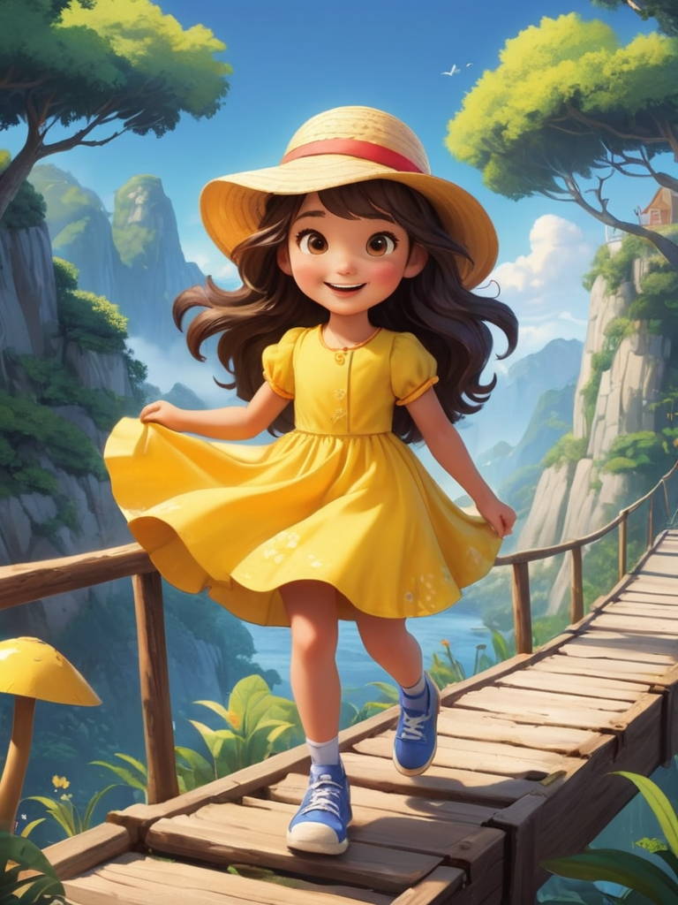

Opening
Mia wakes up in the morning, excited to start a new day of adventure!
Scene 1: Friendship
Mia meets a new friend in the park, and they play a game together, learning how to share and cooperate.
Scene 2: Courage
Mia and her friend face a small challenge (e.g., climbing to a high place or crossing a small bridge), and she learns to be brave when facing difficulties.
Scene 3: Environment
Mia picks up trash in the garden and learns the importance of caring for the environment. She also practices recycling with her friend.
Scene 4: Respect
Mia learns how to respect others at school, whether it’s listening to a friend’s opinions or understanding different cultures.
Scene 5: Emotional Management
Mia faces a small setback (like losing her favorite toy) and learns how to control her emotions and find solutions to problems.
Scene 6: Caring for Animals
Mia and her friend visit the zoo. She learns how to take care of animals and understands their needs.
Scene 7: Healthy Living
Mia learns the importance of eating healthy food and staying active. She goes for a walk and practices yoga with her family.
Scene 8: Sharing
Mia shares her toys at home with her family, learning that sharing brings more joy to everyone.
Ending
As the day ends, Mia feels happy and smart because she has learned so many new things. She looks forward to tomorrow’s adventure.